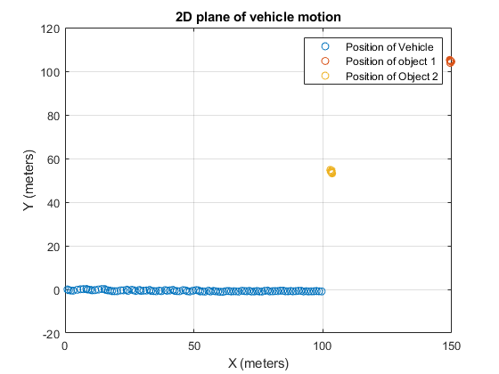

Contents
clear clc % Load given sensor measurements for location of objects in plane of motion % of vehicle load 's1.mat' load 's2.mat'
Given parameters
v=1; % Velocity of vehicle w=0; % Radial veocity of vehicle dt=1; % Sampling time
Initialization condition of EKF SLAM
u=[0;0;0;147;102;98;53]; % Initial mean state estimate vector for system E=[0,0,0,0,0,0,0; 0,0,0,0,0,0,0; 0,0,0,0,0,0,0; 0,0,0,10,0,0,0; 0,0,0,0,10,0,0; 0,0,0,0,0,10,0; 0,0,0,0,0,0,10]; % Initial error covariance matrix uo=[0;0;0;147;102;98;53]; % Initial mean state vector for system Eo=[0,0,0,0,0,0,0; 0,0,0,0,0,0,0; 0,0,0,0,0,0,0; 0,0,0,100,0,0,0; 0,0,0,0,100,0,0; 0,0,0,0,0,100,0; 0,0,0,0,0,0,100]; % Initial error covariance matrix
EKF SLAM
I=eye(7); % Identity matrix R=[0.1,0,0,0,0,0,0; 0,0.1,0,0,0,0,0; 0,0,0.1,0,0,0,0; 0,0,0,0,0,0,0; 0,0,0,0,0,0,0; 0,0,0,0,0,0,0; 0,0,0,0,0,0,0]; % Motion noise covariance matrix Q=[0.1,0; 0,0.01]; % Sensing noise covariance matrix V=[v; 0; 0]; % Velocity vector J=[0,0,0; 0,0,0; 0,0,0]; % Jacobian matrix for locally linearizing the system Fx=[1,0,0,0,0,0,0; 0,1,0,0,0,0,0; 0,0,1,0,0,0,0]; % Fx is a matrix to map any variable vector or matrix to higher dimensional space matrix Fx1=[1,0,0,0,0,0,0; 0,1,0,0,0,0,0; 0,0,1,0,0,0,0; 0,0,0,1,0,0,0; 0,0,0,0,1,0,0]; % Fx1 is a matrix to map any variable vector or matrix to higher dimensional space matrix Fx2=[1,0,0,0,0,0,0; 0,1,0,0,0,0,0; 0,0,1,0,0,0,0; 0,0,0,0,0,1,0; 0,0,0,0,0,0,1]; % Fx2 is a matrix to map any variable vector or matrix to higher dimensional space matrix X1=zeros(100,1); Y1=zeros(100,1); M1=zeros(100,1); N1=zeros(100,1); M2=zeros(100,1); N2=zeros(100,1); for i = 1:100 % Prediction Step u1=u+Fx'*V; % mean state estimate of the system for current timestep based on mean state vector of previous timestep G=I+Fx'*J*Fx; % Jacobian matrix to locally linearize the non-linear function E1=G*E*G'+R; % Error covariance prediction for current timestep based on error covariance of previous timestep delx1=u1(4,1)-u1(1,1); % Prediction of the distance of object 1 in x-direction dely1=u1(5,1)-u1(2,1); % Prediction of the distance of object 1 in y-direction del1=[delx1; dely1]; % Prediction matrix for distance of object 1 q1=del1'*del1; z_hat1=[sqrt(q1); atan((dely1/delx1))]; % Prediction matrix for location of object 1 h1=(1/q1)*[-sqrt(q1)*delx1, -sqrt(q1)*dely1, 0, sqrt(q1)*delx1, sqrt(q1)*dely1; dely1, -delx1, 0, -dely1, delx1]; % Jacobian matrix of predicted location matrix z1=[s1(i,1); s1(i,2)]; % Sensor measurements for object 1 H1=h1*Fx1; % Mapping Jacobian matrix to high dimensional space matrix % Correction Step K1=E1*H1'*((H1*E1*H1'+Q)^(-1)); % Kalman gain u=u1+K1*(z1-z_hat1); % Update mean state vector of the system E=(I-K1*H1)*E1; % Update error covariance matrix of the system % Store values of the mean state vector X1(i,1)=u(1,1); Y1(i,1)=u(2,1); M1(i,1)=u(4,1); N1(i,1)=u(5,1); end for i = 1:100 % Prediction Step u2=uo+Fx'*V; % mean state estimate of the system for current timestep based on mean state vector of previous timestep G=I+Fx'*J*Fx; % Jacobian matrix to locally linearize the non-linear function E2=G*Eo*G'+R; % Error covariance prediction for current timestep based on error covariance of previous timestep delx2=u2(6,1)-u2(1,1); % Prediction of the distance of object 2 in x-direction dely2=u2(7,1)-u2(2,1); % Prediction of the distance of object 2 in y-direction del2=[delx2; dely2]; % Prediction matrix for distance of object 2 q2=del2'*del2; z_hat2=[sqrt(q2); atan((dely2/delx2))]; % Prediction matrix for location of object 2 h2=(1/q2)*[-sqrt(q2)*delx2, -sqrt(q2)*dely2, 0, sqrt(q2)*delx2, sqrt(q2)*dely2; dely2, -delx2, 0, -dely2, delx2]; % Jacobian matrix of predicted location matrix z2=[s2(i,1); s2(i,2)]; % Sensor measurements for object 2 H2=h2*Fx2; % Mapping Jacobian matrix to high dimensional space matrix % Correction Step K2=E2*H2'*((H2*E2*H2'+Q)^(-1)); % Kalman gain uo=u2+K2*(z2-z_hat2); % Update mean state vector of the system Eo=(I-K2*H2)*E2; % Update error covariance matrix of the system % Store values of the mean state vector M2(i,1)=uo(6,1); N2(i,1)=uo(7,1); end
Plot locations of robot and the two objects
figure(1) plot(X1,Y1,'o') grid on hold on plot(M1,N1,'o') plot(M2,N2,'o') hold off xlabel('X (meters)') ylabel('Y (meters)') title('2D plane of vehicle motion') legend('Position of Vehicle','Position of object 1','Position of Object 2')